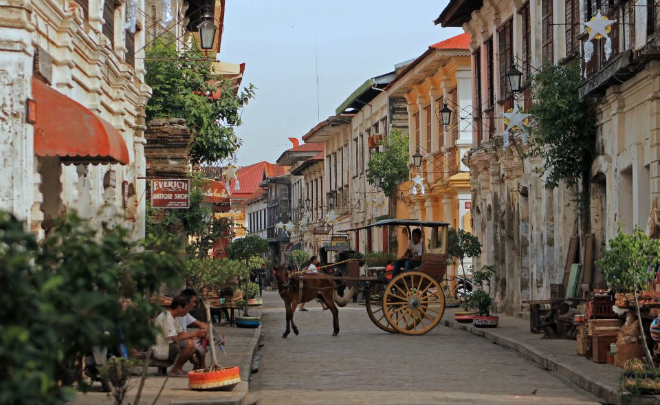
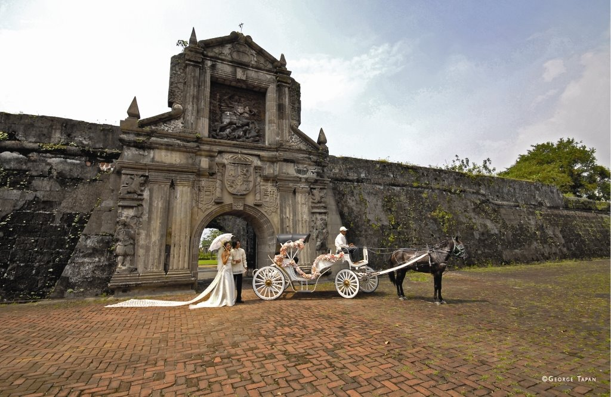
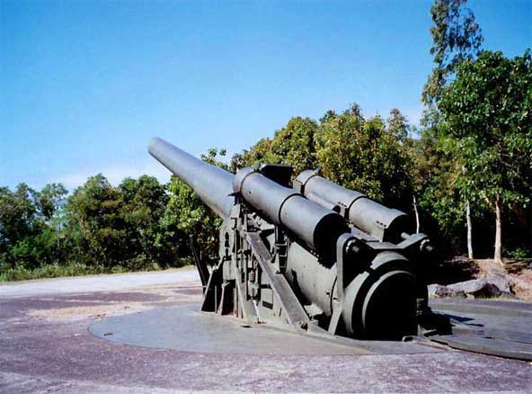
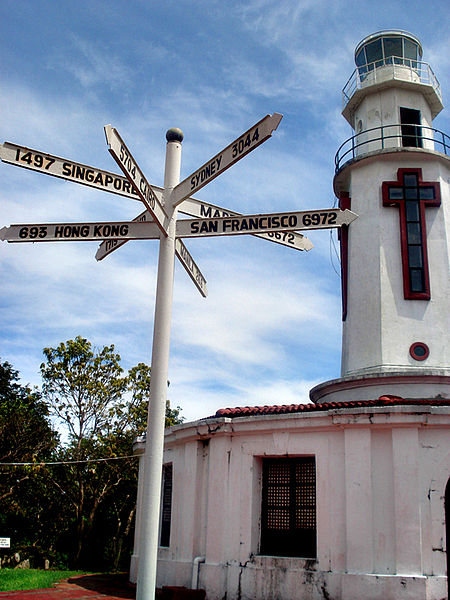

The Philippines is rich in history from the very beginning of its existence. While most people enjoy its different exciting tourists spots and places, some people also love to discover the historical origins that resulted to a beautiful Philippines today.
The Philippines is the third largest English speaking country in the world. It has a rich history combining Asian, European, and American influences. Prior to Spanish colonization in 1521, the Filipinos had a rich culture and were trading with the Chinese and the Japanese. Spain's colonization brought about the construction of Intramuros in 1571, a "Walled City" comprised of European buildings and churches, replicated in different parts of the archipelago. In 1898, after 350 years and 300 rebellions, the Filipinos, with leaders like Jose Rizal and Emilio Aguinaldo, succeeded in winning their independence.
In 1898, the Philippines became the first and only colony of the United States. Following the Philippine-American War, the United States brought widespread education to the islands. Filipinos fought alongside Americans during World War II, particularly at the famous battle of Bataan and Corregidor which delayed Japanese advance and saved Australia. They then waged a guerilla war against the Japanese from 1941 to 1945. The Philippines regained its independence in 1946.
Here are some historical sites in the Philippines that you might want to discover upon visiting this lovely country:
Vigan
One of Philippines' most wonderful places, as it features the Spanish record of the nation. This town is in the northern part of Philippines and its heritage village was known and listed since December 2, 1999 in the UNESCO world heritage list for its unique Spanish colonial history where spanish monumental buildings built in the 18th century are well preserved up to this day.
Intramuros
The oldest district and historical spot of Manila which came from a latin word Intramuros - meaning "within the walls". This was also known as Ciudad Murada or "walled city" for its most popular feature: a nearly three-mile-long routine of large rock surfaces and fortifications that almost absolutely encompasses the whole region. You can ride a Kalesa (horse with a cart) to tour the place or take a walk and find Fort Santiago, Rizal's Shrine, San Agustin Chapel and art gallery, Manila Chapel, many little plazas and contemporary dining places, most of which a combination in the nearby structures.
Try This out:
Carlos' Walk This Way Intramuros tours (Php 1,100/Eu 17) have made him famous with good reason. He has created a stage out of the fortified city, as well as made characters out of the ghosts of Spanish friars and Japanese soldiers still lingering in its corners. He will lead you through Fort Santiago with a Pied Piper strut, donning a tall top hat, and a boom box in hand. His tour is a theatrical, hilarious multi-act play about pre-Hispanic until present Manila. He has an arsenal of antics that will command your attention. Wedged in between his monologues were sudden explosions of confetti and vaudeville dance numbers. This is one historical tour that'll keep you up.
Corregidor Island
Also known as "the Rock" as it is a small rocky island located at the entrance of Manila Bay. Corregidor served as the headquarters of Allied forces of Filipino and American soldiers who fought against the invading Japanese forces during World War II. In this island still stand the big guns which had been the weapons of the great defenders who gave their lives for freedom and justice; ruins of buildings and structures that had protected so many lives; a museum for the different memorabilias and remains of the people who had stayed there especially the former President Manuel L. Quezon; a Pacific War Memorial and the Malinta Tunnel which is a bombed proof where command and communications took place and served as a hospital with 1,000 bed capacity, as well as food and supplies storage. A replica of Corregidor’s jeepney during the Spanish era called "tramvias" is the transportation used for the island tour. 